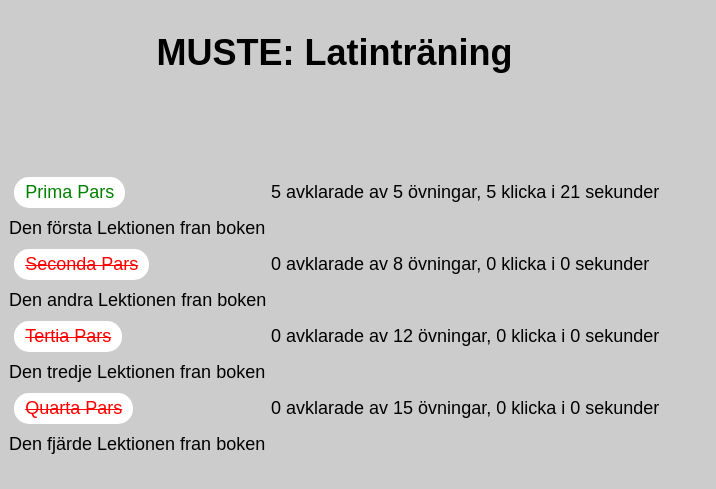
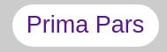
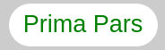
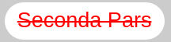
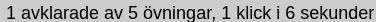
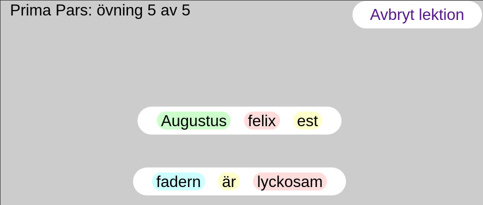
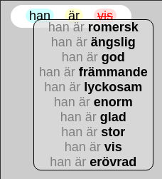
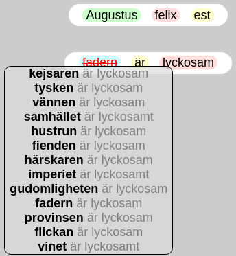
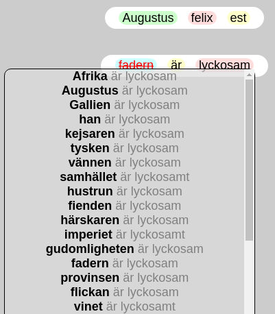
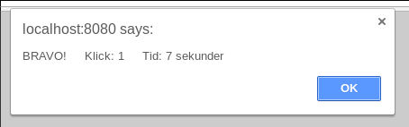

Instructions
After logging in you will see the lesson list. It shows you categories for available exercises.
Lesson list

After logging in you will the list of available lessons. Lessons can be unfinished (), finished () or disabled ().
Click on the lesson name to start an exercise of this lesson. When you finish all exercises within a lesson the lesson counts as finished. Most exercises can be repeated as often as you like. Every time you restart a lesson a new set of exercises will be selected. Some specific exercises might be only available once.
Besides the name of the lesson you see some statistics (), the number of solved exercises, the total number of exercises in this lesson, and how many clicks and seconds you spend on this so far. These counters are reset every time you restart a lesson.
As soon as you click on a lesson name you will see the exercise screen.
You can log out any time by clicking on the  button.
button.
Exercise view

In the exercise screen you are supposed to solve translation exercises. You are presented two sentences in two different languages and your job is it to change one of the sentences to become a correct translation of the other.
To do your job you can click on a word and set it in focus. A menu will appear which show other words or phrases that fit into the same place as the ones in focus.
This is an example showing the menu that appears if you click on the word vis. The focus is highlighted in red and striked through.
The colors in the sentences give you hints where you have to change parts to match them with the other sentence. If parts are already highlighted in the same color they are already matching translations. The parts where the colors don't match have to be changed. Sometimes you have to click several times onto a word to get the right translation. An example would be:
First click: 
Second click: 
OBS! at the moment it is possible that it seems that the menu does not change after a click. That is currently a bug in the system. Just try to click again to get more suggestions.
When you finished your task for an exercise you get a message congratulating you.

After each exercise you are transported back to the lesson list. You can also cancel exercises at any time.